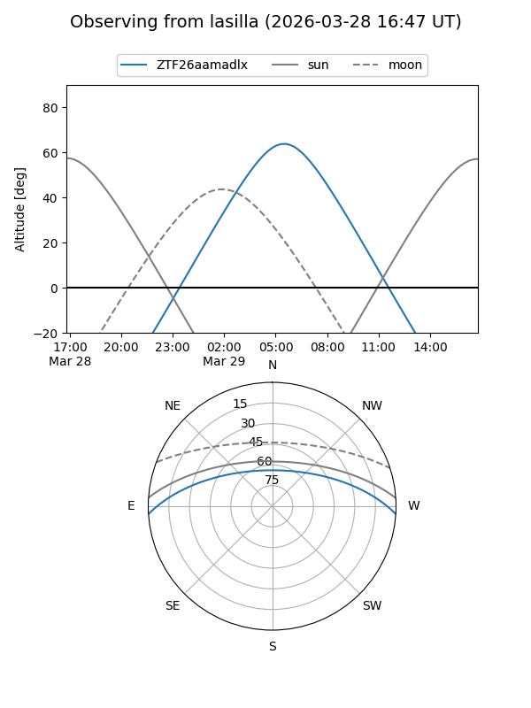
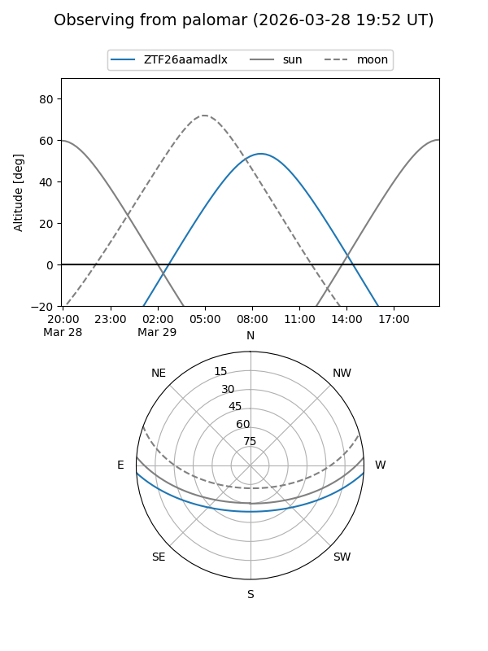

ZTF26aamadlx
Target ZTF26aamadlx at 2026-03-29 10:37
Aliases and brokers:
FINK: link
Lasair: link
ALeRCE: link
alt names
ZTF26aamadmj (ztf,fink_ztf)
Coordinates:
equatorial (ra, dec) = 197.9101,-2.99731
equatorial (HMS+DMS) = 13:11:38.42,-02:59:50.32
galactic (l, b) = (312.9018,+59.48280)
Flags:
Photometry:
last ztfg=17.29
1 ztfg detections
Lightcurve
Visibility


Additional plots